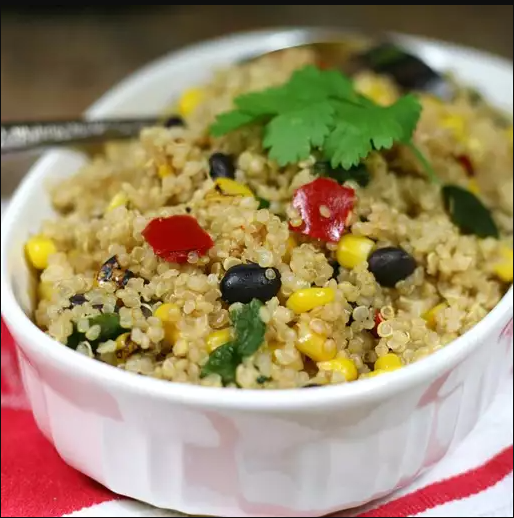

Simple Mexican Quinoa

Description
This is my new favorite quinoa dish. It is super simple.
Ingredients
- 2 cups water
- 1 cup quinoa
- 1 (12 ounce) package frozen corn and black bean vegetable blend
Steps
Step 1
- Bring water and quinoa to a boil in a saucepan. Reduce heat to medium-low, cover, and simmer until quinoa is tender and water is absorbed, 15 to 20 minutes.
Step 2
- Place vegetable blend in a microwave-safe bowl; microwave until heated through, about 5 minutes. Stir vegetable blend into quinoa.
Kezdőlap